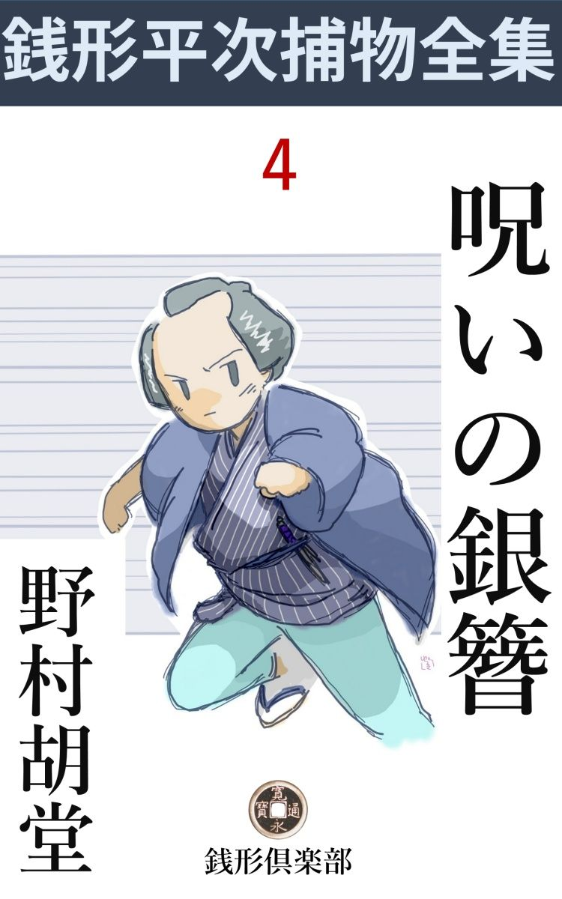
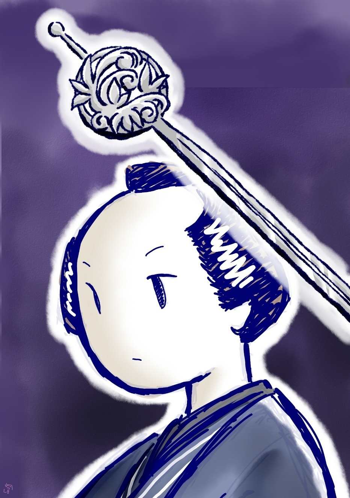

| 呪いの銀簪: 銭形平次捕物全集第４話 (銭形倶楽部) | |
| 野村胡堂 | |
| ZENIGATA CLUB (2018) | |

一
「永い間こんな稼業 をしているが、変死人を見るのはつくづく厭だな」
捕物の名人銭形の平次は、口癖 のようにこう言っておりました。血みどろの死体をいじり廻すのを商売冥利と考えるためには、平次の神経は少し繊細に過ぎたのです。
それが一番凄惨な死体と逃れようもなく顔を合せることになったのですから、全くやりきれません。
「ガラッ八、手前は大変なところへ、俺を引っ張って来やあがったな」
「縄張り違いは承知の上ですが、布袋 屋 の旦那が、石原の親分じゃ心もとないから、銭形のに見て貰ってくれって言いますぜ」
「つまらねえお節介だ」
舌 うちを一つ、それでも振りもぎって帰ることもならず、柳橋の側に繋 いだ屋形船の簾 を分けました。中は血の海。
子分のガラッ八が差出した提灯の覚束ない明りにすかして見ると、若い芸妓が一人、銀 簪 を深々と右の眼に突っ立てられて、仰向け様に死んでいたのです。
「あッ」
死体嫌いの平次は思わず顔を反 けました。若くも美しくもある様子ですが、半分血潮に染んで、その物凄さというものはありません。
「これは酷 い」
そのうちに平次は職業意識を回復して、一歩女の死体に近づきました。
紅の裳 を蹴返して踏みはだけた足を直してやると、一番先に目についたのは手。
「何か持っていますぜ」
ガラッ八が注意するまでもありません。平次は早くも近寄って見ると、苦悩に歪 んだ女の左手に握ったのは男物の羽織の紐 、その頃流行った太く短い絹 真田 で、争うはずみに引き千切ったらしく、紐の耳には毮 り取ったばかりの乳が付いております。
「これは良い手掛りだ」
その紐を毮り取った絽の男羽織が、脱ぎ捨てた儘に放り出してあるのを、ガラッ八は少し得意らしく拾い上げました。
女の前髪は摑んで引毮 られたようで滅茶滅茶に崩れておりますが、外に傷らしいものは一つもありません。
眼に突っ立てた銀 簪 は、鷲の羽を浅く彫った平打の丈夫な品で、若い芸妓の頭を飾るにしては少し野暮 です。
それを松の葉になった足の方三寸ほども、人間の眼の中へ突き立てたのですから、鉄槌 で叩いたのでなければ、恐ろしい強力です、------ どうして刺したろう------ 平次はフトそんな事を考えておりました。
「親分、布袋屋 の旦那が、ちょいとお話し申し上げたい事があるそうで------ 」
岸から小腰を屈めて、恐る恐る船の中を覗込んだのは、凉 の一行に立ち交っていた幇間 の金兵衛です。
「ここで宜しければお目にかかりましょう------ 、と言って貰おうか」
「へエ」
平次は小首を傾 げて、虐 たらしい殺されようをした女の頭を見詰めております。そこには、不思議に落ち散りもせず玳瑁 の櫛 と、珊瑚 の五分玉に細い金足をすげた簪 がもう一本あったのです。
二
駒形の材木問屋で、当時江戸長者番附の前頭から二三枚目に据えられた布袋 屋 万三郎、馴染の芸妓 奴 と、町内の踊りの師匠お才をつれて、その晩駒形から凉み舟を出しました。
乗合は外に幇間 末社を加えて六人、船頭の直助に出来るだけ緩々 と漕がせて、柳橋へ着いたのは戌刻 少し前、------ 船の中に持ち込んだ物では、どうも酒が飲めない、丁度腹も空き加減だから、河岸っぷちの鶴吉 で飲み直そうということになって、一同ぞろぞろと桟橋 を渡って鶴吉の裏口から離屋へ入り込みました。
芸妓の奴は、若くて美しくて、吉原 ではいま流行 児 ですが、無理強いに飲まされて少し酔っているのと、土地に馴染がないから、気が詰っていけないと言い出して、到頭船の中に残ることになり、これも只の酒をしたたかに呷 って艪 を押す手も覚束なくなった船頭の直助と二人、纜 った船の舳 と艫 に別れて、水を渡って来る凉しい風に酔いを吹かれていたのです。
それから半刻ばかり経って、直助は襲われるように眼を覚ましました。客がいなくなると急に酔いが発して、艪 にもたれたまますっかり睡りこけていたのです。
ツイ簾 一枚隔 てて、勿体ないが観音様の次と言われている人気者の奴------ 近頃は万三郎の持物のように思われている美しい芸妓------ がいると思うと、年が若いだけに、少しは極り悪くなります。
涎 を拭いて、直助は何の気もなく舳 の方をすかして見ました。両方の軒に吊 した提灯は、何時の間にやら蠟燭 が尽きて、半分ほどは消えてしまいましたが、それでも、簾の中を見る程度には差支えありません。
血の海。
眼球に突っ立った銀 簪 、乱るる裳 の紅 ------ 。
たった一目で、直助は仰天しました。
「わッ、た、た、大変ッ」
睡気も酔も覚めてしまって、鶴吉の離屋へ鉄砲玉のように飛込んだものです。
騒ぎは颶風 の如く捲き起りましたが、何をどうすれば宜いのか、まるで見当が付きません。町役人のところへ人を飛ばせたのは、余程経ってからの事。
好い塩梅 に、捕物の名人銭形の平次が、寄合の帰り子分のガラッ八と二人で、鶴吉の表で飲んでいることが解ったので、取り敢えず引張り出して、------ 縄張り違いだから------ と再三断るのを無理に、兎も角検屍の役人の来る前に一通り現場を見て貰うことになったのです。
「親分、こう言うわけだ。何分宜しく頼みます」
大家の主人が、こうなっては目明しや岡っ引の機嫌も取らなければなりません。
布袋屋 の主人万三郎は、小判を五六枚鼻紙に捻 ると、平次の袖へそっと滑らせました。
「あッ、何をなさるんです。そんなことをしちゃ、反って旦那の不為 だ」
平次は小声でたしなめて、小判の包みを、万三郎の手に返しました。小判五六枚というと、今の相場にして五六万円にも匹敵するでしょうから、ケチな岡っ引を買収する袖の下としては不足はありませんが、万三郎は平次の心持を測 り兼ねて------ もう少し多くしなければならなかったか知ら------ と言った疑いに悩まされておりました。
平次は委細 構わず、座敷 の上に不安な顔を押し並べた同勢を見渡しました。布袋屋万三郎は三十七、八、少しのっぺりしておりますが、仲々の好い男、その頃の大商人らしく、少しく派手ではあるが寛濶な様子合いから見ても、銀簪を揮 って、女を殺すような人体 とは思われません。
その後ろに従うのは、幇間 が二人、燗番 一人、盗食 いや夜逃げはするかも知れませんが、人間一匹殺せる人相のはおりません。
万三郎の袖の蔭から、恐怖に引釣った蒼白い顔を覗かせているのは、踊の師匠のお才、二十七八の中年増ですが、商売柄身のこなしの鮮 かな水際立って美しい女です。しかしこれとても人間の眼の中へ、銀簪を三寸も叩き込める柄ではありません。
最後にまだ船の中に残っている船頭の直助があります。三十前後の独り者で、人は好いが酒癖 の悪い男、疑えば先ずこれが一番疑われる地位にあります。
平次は腕を拱 いて凝 っと考え込みました。
川をわたる夜の風が、六月と言っても少し冷々として、初更過ぎの江戸の静かさは、何とはなしに身に沁みます。

その時、
「銭形の兄哥 、御苦労だったね。俺 らが来た上は、もう引取っても構わないよ」
棘々 した言葉、白い眼。
顔を挙げると、平次と張合って手柄を争う石原の利助が、四十男の押の強そうな顔を、皆んなの後ろから覗かせているのでした。
三
「平次」
「へエ」
「わざわざ来て貰って気の毒だったな」
「どう致しまして、------ 御用は何で御座いましょう」
若い与力笹野新三郎の屋敷に呼出された平次は、敷居の外から額 越 しにこう見上げました。与力と岡っ引では、身分に大変な隔 りがありますから、許されなければ、敷居の内へ入ることなどは思いもよりません。
「ずっと、中へ入るがいい、------ 少し聞きたい事がある」
「へエ------ 」
「外ではない、柳橋の芸妓殺し、石原の利助が呑込んで、布袋屋万三郎を挙げたんだが、どうも下手人らしくない」
「えッ、それは無法、------ いえなに、石原の兄哥の鑑識 違いと言っちゃ悪いが、万三郎が、あの女を殺すわけが御座いません」
余りの事と言わぬばかりに、------ 平次の口調はひどく弾みます。
「ホウ------ 、それはどう言うわけだ。余程確かな事を握っていなければ、そんな事を言えるわけはない、話して見るがいい」
「へエ」
そう言われると平次も当惑しました。確かな証拠と言っては一つもありませんが、何となく平次の第六感は、そう言った響きがあると言うだけの事だったのです。
「万三郎は、あの晩お前の袖に小判を落して、ひどくお前に怒られたというではないか」
どこから聞いたか、新三郎はつまらぬ事まで見透 しです。
「へエ」
「平次の気風を知らなかったのは、万三郎の手落ちだ。そんな厭なことをするところを見ると、万三郎の心持に、やましいところがあると思うが、どうだ」
「それは旦那様、お考え違いで御座いましょう」
「どうして」
「人殺しの下手人が本当に万両分限 の万三郎なら、五両や三両で岡っ引の口を塞 ごうとはしません。少くとも五十両とか百両とか、吃驚するような大金を出すに決っております」
「成程」
「万三郎が五両や三両の包みを、平次に摑ませようとしたのは、あまりの事に顚倒 して、取り敢えず岡っ引の触りを良くして置こうと言ったまでの話し。あれは大それた悪党のする事ではなくて、臆 病 な商人だからやった事で御座います」
「フーム、利助とは大変な違いだが、そう考えられない事もないな」
笹野新三郎は豁然とした様子ですが、流石 にそれは口に表わしません。
「外に万三郎に疑いを掛けるような事がありましたら、念のために仰しゃって下さいまし。口幅ったいようで恐れ入りますが、私の見た事も少し申し上げとう御座います」
「では聞くが、殺された女の手に、万三郎の羽織から毮 り取った紐を握っていたのは、どうしたわけだ。利助はそれを何よりの証拠のように言うが------ 」
笹野新三郎は------ 今度は弁解の仕様があるまいと言った口吻です。
「それが可怪 しゅう御座います。女の前髪が毮られて滅茶滅茶に毀 されているところを見ると、曲者は後ろから女の前髪を押えて、右手に持った簪 を女の右の眼へ突っ立てたに相違ありませんが、そんな恰好になっていて、死物狂いの女が、自分の後ろにいる曲者の羽織の紐を毮り取れるものでしょうか」
「フーム」
これは、仕方噺 をするまでもなく、新三郎にもはっきり 判りました。
「それに、紐を毮り取られた羽織を、そこへわざわざ脱ぎ捨てて行くのも可怪しゅう御座います」
「------ 」
「もう一つ、後で鶴吉 の奉公人共に訊 くと、最初船から上がって、離屋 へ入った時、万三郎は羽織を着ていなかったと申します。して見ると、離屋から抜け出して船へ帰った万三郎がわざわざ羽織を着て女を殺し、それから紐を毮られた羽織をもう一度脱いで船の中に置いて来たことになりますが------ 」
「判った、平次、私もどうも腑に落ちない事があったよ。利助は万三郎に相違ないと言うが、鶴吉の女中に聞くと、万三郎は不浄 へ一度立ったが、その時女中が供をして行ったし、あとは決して中座しないと言うのだ」
「それは私も聞きました」
「利助は、万三郎は大金持だから、女中の三人や五人の口を塞 ぐのは何でもない------ とこう言うのだが」
「それは乱暴で御座います。生き証拠が三人も、五人もあって、口が揃うのまで疑っては際限がありません」
二人は顔見合せて銘々の考えに沈みました。万三郎が下手人でないとすると、さて誰があんなむごたらしい事をしたでしょう。
「平次、お蔭でよく解ったよ。明日は拷問 に掛けても万三郎の口を割って見せると利助は言っているが、この分ではそんな事をさせるわけには行くまい。この上とも利助に遠慮をせずに骨を折って見てくれ。私から頼む」
「へエ------ 」
そう言われると、さすがに厭だとは言われません。平次は当惑して自分の膝小僧に眼を落しました。
四
万三郎が許された翌る日。
「親分、石原の利助は今度は船頭の直助を挙げました」
あわて者のガラッ八が、長屋中へ響き渡るような声で、こう言いながら飛込んで来ました。
「到頭やりゃあがったか、そう来るだろうと思ったよ」
平次は畳の上へ煙管 をポンと投り出して、高々と腕を拱 きます。
「ね親分、本当に下手人は船頭でしょうか」
「それは判らない」
「じゃ、冤罪 でしょうか」
「それも判らない。いくら酔っ払っていたにしても、簾 一重の隣りで、人一人殺されるのを知らなかったというのは可怪 しい------ 」
「して見ると矢張り石原の見込み通り、下手人は船頭に相違ねえことになる」
「さア、船頭が芸妓を殺す気なら、面倒臭くて不確かな簪 などを振り廻さずに、手っ取早く足でも掴んで川の中へ沈めにかかりそうなものだ」
「なーる」
「でなきゃア、船の中には刃物もある筈だ」
「------ 」
「どんな鉈 だって庖丁だって、銀簪よりは役に立つぜ」
「そりゃネ」
「それに、本当に船頭が殺したのなら、もう少し細工をするだろうじゃないか。酔払って寝ていて、何んにも知りませんでは知恵がなさ過ぎる」
「そう言ったものでしょうね」
平次にそう言われると、少々お頭 の良くないガラッ八には、何が何やらまるで見当が付かなくなります。
二人はもう一度柳橋まで行って見ました。わざわざ船を鶴吉の裏手に着け、先夜の一行がやったように、柴折戸 を開いて離屋へ通して貰いましたが、船の中へは、河岸の石垣伝いに、往来から直接でも行けるということを発見した以外には、何の得るところもありません。
その足で界隈の小間物屋を一と通り廻って、奴 の眼から引抜いた簪 を見せて歩きましたが、
「どうも近頃売った覚えは御座いません。一体その簪は古い型で、二代も三代も持ち伝えた品のようですから、江戸中の小間物屋を当っても無駄で御座いましょう。その鷹の羽の紋や足がすっかり擦 れているところを見ると、どうかしたら三十年も、五十年も昔に、お求めになった品じゃ御座いませんか」
小間物屋の言い草は大同小異で、この上当って見ようと言う気も挫 けてしまいます。
がっかりして戻って来ると、
「お客様ですよ、親分」
雇い婆さんが、気を揉んで外に立っております。
「どんな人だ」
「女の人ですよ」
「女？ おかしいなア」
「親分もお安くねえぜ、奢 らなくちゃいけませんよ」
「馬鹿な事を言えッ」
五
女客と言うのは、二十四、五の中年増、眉の跡 も青々とした、凄いほどの美人ですが、小弁慶 の単衣はひどく潮垂 れて世帯くずしの繻子 の帯にも少しばかり山が入っております。
「銭形の親分でいらっしゃいましたか、御免下さいまし。図々しいようですが、上がり込んで御持ち申しておりました」
歯ぎれの良い調子、莞爾 すると、漆黒 の歯がチラリと覗いて、啖呵 のきれそうな唇が、滅法 阿娜 めいて見えます。
「ちょいと留守にして、済まなかったが、お前さんはどちらからお出でなすった」
平次は自分の家ながら妙に迎えられるような心持で上がり込んで、上がりかまちの女の前へ煙草盆と座蒲団を持ち出します。
「外じゃ御座いません、------ あの柳橋で殺された吉原芸妓の奴 ------ あの妓 のことに付きまして、親分に伺いたいことが御座います」
「------ 」
「あの下手人はもう挙がりましたでしょうか。押付けがましいようですが、少しわけがあって、それを伺いに参りました」
言いにくそうですが、それでも案外、スラスラとやって退けて、平次の顔を下から艶めかしく見上げます。
「いや一向------ 私には見当も付かなくて困っている。石原の利助のところへ行って聞いて見なさるがいい、石原のは、何か当りが付いたと言うことだ」
「へエ------ 、石原の親分じゃ伺うまでも御座いません」
妙に奥歯に物の挿 まったような微笑を浮べて、腰を浮かします。
「あ、もう帰りなさるのか」
「いずれ又お訪ね申し上げます。それでは親分、お喧 ましゅう御座いました」
「あッ、待った。お前さんの名は何と言いなさる、それから町処は------ 」
「いえ、それには及びません。用事があれば又私の方から参ります、それでは親分さん」
丁寧に会釈をしたと思うと、滑るように戸口を出て、ツ、ツ、ツと路地の外へ。
「八」
「へエ------ 」
「頼んだぞ」
「合点 」
ガラッ八は女の後を追って外へ飛び出しましたが、暫くすると、つままれ たような顔をして帰って来ました。
「どうだ、八」
「親分、ありゃ人間じゃありませんぜ。路地の外へ飛出すと、右へ行ったか左へ行ったか、皆暮 わからねえ」
「何だと」
「煙 のように消えっちまいましたよ」
「乗物はいなかったか」
「それに油断があるものですか、乗物と名の付くものはたった一つ、飛んでもねえ立派な駕籠が、ずっと右手から左へ通り過ぎましたよ」
「それだッ」
「えッ」
「あの女は、右手の方にズッと離れて待たして置いた駕籠へ乗って、左手へ通り抜けたんだ。馬鹿野郎、それくらいの事に気が付かねえか」
「あッ」
と言ったが追っ付きません。
その上、女の帰った跡を見ると、留守中に探したものと見えて、用簞笥の抽斗 に入れて置いた、平次の覚え書が紛失 しております。その覚え書の中には奴殺しの一件から平次の見込みまで事 細 かに書いていたのですから、これには全く驚いてしまいました。今更家をあけた雇い婆さんを叱ったところで、オロオロするだけで何の足しにもなりません。
六
平次の直感から言っても、船頭が下手人でないことは解っておりますが、意地になって楯 をつく、石原の利助を仰え付けるほどの反証がありません。
船頭直助の母親は、涙ながらに平次のところへ飛込んで来たのは、その翌る日。------ 何とかして伜を助けてくれ、伜は酒癖が少し悪いだけで、根が神様のような正直者、決して人などを殺す男ではない------ と言うのです。母親の言い分ですから、もとより掛値も自惚 もあるでしょうが、船頭の無実は平次も知り過ぎるほど知っております。
しかし、今の内に動きの取れない証拠を進めて、石原の利助を取って抑えない以上は、直助の命を救う道はまず絶望と思わなければなりません。
母親は泣きながら帰って行きました。平次を訪ねて慰 められるどころか、反って、大きい失望を背負 わされたようなものです。
しかしこの悲しみも永くは続きませんでした。芸妓殺しの下手人は、船頭直助でないと言う、消極的ではあるが、動きの取れぬ証拠を提供してくれる事件が起こったのです。
それはこうでした。
今は跡形もありませんが、その頃流行った瓦 町の焙烙 地蔵様の門前、お百度石の側で、同じ町内の糸屋の娘お駒が、銀 簪 に右の眼玉を突かれて、芸妓奴と同じように、無慙 な死に様をしていたのです。
お駒は浅草から両国までの間に、並ぶ者がないと言われた美しさで、まだ十七になったばかり、唄にも絵にもされた小町娘でした。それが何んの心願があっての夜詣りか知りませんが、焙烙地蔵のお百度石の下に、眼を突かれた無慙な死体になって発見されたのですから、江戸中の騒ぎは大変です。
利助や平次は言うに及ばず、町方与力の笹野新三郎まで現場に駆け付けましたが、柳橋の芸妓殺しと、手口が全く同じだという外には、毛程の手掛りも残ってはいません。
派手な縫 模様 の単衣を着たお駒が、可愛らしい後ろ帯を引摺って、半面紅 に染んで死んでいた痛々しさは、馴れた眼にもツイ涙が浮かびます。
「利助、平次、これは容易ならぬぞ、手柄争いをする時ではない。二人心を併せて下手人を探し出してくれ、下々 の騒ぎは、何時かは必ずお上のお耳に入る」
こう沁々 新三郎に言われると、平次も利助も愧 じ入って言葉もありません。
船頭の直助はその日のうちに許されましたが、さてこうなると、さすがの利助も、もう縛りようにも縛る当 がありません。
そのうち、第三、第四の犠牲者が現われました。第三人目は、お蔵前の飲み屋の看板娘おさん、これは銭湯の帰り、露地の入口で銀簪に眼を刺され、第四人目は駒形の小間物屋の若女房お国、所用で出かけた夫の帰りを待ちながら、店を早仕舞にして奥へ入ったばかりのところを、これも右の眼を銀簪で刺されて、長 火鉢 の側に無慙な死体を横たえていたのです。
手口は四人とも判で押したよう、寸毫 の違いもありませんが、いずれも近々と傍へ寄ってやったところを見ると、下手人はこの界隈に住んで、犠牲者達の顔見知りの者でなければなりません。それからもう一つの特徴は、殺されたのは十七から二十五まで、年にも身分にも少しばかりの開きはありますが、いずれも評判の美人で、十人並と言ったのさえ、一人もありません。
その頃若い女が、夜分一人で外へ出るのが怖 いような事を言うと、------ ヘン、一かど美 い女のつもりだから怖ろしいや------ と言われたくらい、何しろ江戸中煮えくり返るような騒ぎです。
南町奉行朝倉石見守 は、与力筆頭笹野新三郎を呼び付けて鞭撻 すると、笹野新三郎は利助や平次をせき立てる有様、こう事件が深刻になっては、手柄争いどころの沙 汰 ではありません。
七
「親分、この四本の簪 のうち、平打 の二本だけは真物 の銀だが、あとの二本は真鍮 台 に銀流しをかけた、飛んだ贋物 ですぜ」
「何？」
銭形の平次もこれには驚きました。四人の女を殺した四本の簪を役所から借り出して、顔見知りの錺屋 に鑑定して貰うと、この始末です。
併し、銀流しと聞いて平次の心の中には、驚きの底にも一道の光明がサッと射し込みます。
大事な証拠の簪はガラッ八に持たせて役所に返し、自分はその足で両国の盛り場へ。
言う迄もなくその時分の東西の両国の賑いは、今の浅草の六区のようなもの。見世物、軽業、歌舞伎芝居が軒を並べ、その間に水茶屋が建て込んで往来の客を呼ぶ外、少しの空地へもテキ屋が割り込んで、人寄せの独楽 やら、居合抜、三文手品、豆造、弘法様の石芋 、安玩具などを声を涸 らして売っております。
その中に立ち交って、銀流しの露店が一つ、大道の上に茣蓙 を敷いて、その上に大小様々の金物、------金 盥 やら、鈴やら、火箸やら、薬罐 やら、銭やら、鍵やら、ありとあらゆるものを並べ、薄茶色の粉で磨いて、それを悉 く銀色に光らせて口上を言っております。
「さア、よく見なさい。これはオランダ人から伝わった、南蛮秘法の銀流し、あそこにもある、ここにもあると言う物ではない。ちょいと唾 を付けて磨 くと、どんな物でも立ちどころに銀になる。鍋の片 ら、銅の薬罐、鍋鉄、真鍮の煙管、何でも同じこと、お望みなら山吹色の小判でも、貴方がたの鼻の先で、見事瞬 きする間に銀にしてお目にかける。嘘だと思う方は煙管でも、簪 でも、お待ち合せのものを出して御覧じ、さア遠慮することはない------ 」
能弁にまくし立てる女を、ヒョイと覗いて驚きました。
いつぞや平次の留守宅へやって来て、覚え書を盗んだ上に照れ隠しに銀簪の曲者の手掛りを聞いて行った、あの凄いほど美しい中年増に紛 れもなかったのです。
併し平次は、人混みの中へ十手を閃 かして、真昼 の盛り場を騒がせるような事はしません。
手拭を出して、ちょいと頬冠りをしたまま、なおも人垣の間から、奇怪な女の一挙一動に、何物をも見尽さずには措かない眼を注ぎました。
もう一つ驚いたことに、よくよく見ると、茣蓙 の上に並べた大小様々の金物は、悉くと言ってよいほどこの界隈 で盗まれた品ばかり、それに銀流しをかけて、ズラリと諸人の前に並べたのは、底の知れない横着さです。
この中には、青銅の香炉 もあり、蠟 銀 の置物もあり、名作の鍔 や目貫 は言うまでもなく、ひどいのになると、真物 の小判や小粒さえも交っている有様。それへ一々銀流しをかけて鍋の片 やら、薬罐の蓋 と一緒に並べたのは、実に人を食ったやり方です。
平次は、すっかり興味をそそられて、その辺から去りもやらず、殆んど半日銀流しの美人を見張りました。夕方、人通りが少し疎 になると、女はバタバタと店を仕舞って、件 の贓品 やらガラクタやらを竹籠の中に投り込み、大風呂敷に包んで背負った上、茣蓙 を丸めて小脇に、馴れた様子でスタスタと柳原の方へ引揚げて行きます。
八
丁度たそがれ時、人通りが絶えて、町家も水の上も、一様に雀色 に見える頃でした。柳原の淋しい土手に掛ると、
「ちょいと、お神さん、暫く待ってもらいたいね」
平次はたまらず声を掛けてしまいました。
「何だえ、気味が悪い、用というのは私にかい」
「そうだよ」
「気障 な事をすると承知しないよ。憚 りながら銀流しの、お六だよ」
相手の出ようを測り兼ねて、お六と名乗る女は夕闇をすかします。
「お六、御用ッ、神妙にせえ」
キラリと十手。
「あッ、お前は平次」
飛退くとどうして肩から解いたか、重い荷物は草の上に落ちて、お六は柳を小楯 に屹となります。
「お六、逃がれぬところだ、観念してお縄を頂けッ」
「何をッ、銀流しのお六姐さんは、安岡っ引の手に了 えるような代物 じゃねえ。下手にあがくと棘 を刺すよ」
「黙れッ」
平次は飛込んで女の肩をハタと打ちました。
「あッ」
逃げようとする手首に絡 んだのは、何時の間に掛けたか一条の捕縄。
「神妙にせえ」
これはお六が弱いのではなく、平次の手練があまりに鮮 やかなためでした。宵の人足が、三人と立ち止らないうちに、銀流しの美女は銭形平次の手でキリキリと縛り上げられてしまったのです。
近所の自身番まで、縄付の女と大風呂敷包みを持ち込んで、ピシャリと障子を締めきると、平次は早速、埃 りを叩いて見ました。
「女、もう叶わぬところだ、皆んな申上げてしまえ」
「平次、増長しちゃいけないよ。調べはお役人のすることだ、岡っ引のくせに、お六姐さんの口を取ろうなんて、生意気だよ」
と、大変な鼻息、嬌声 を発して、縄目の身をもがく年増の美しさは一通りではありません。一筋縄で行きそうもないと見て、平次は早速攻手を変えて見ました。
「黙れッ、若い女四人も殺して、命が幾つあっても足りないお前だが、素直にしておれば、まだお上にはお慈悲もあると言うものだ」
「何だって？ もう一度、言って御覧よ。私が四人の若い女を殺した？冗談も休み休み言っておくれ。盗みはしないと言わないが、人殺しなどは身に覚えのないことだ。銀流しのお六は、虫を殺すのさえ嫌いな仏性だよ。つまらない事を言っておくれでない」
さすがにお六も驚いたようです。
「隠したって駄目だよ、証拠は銀流しの簪 だ。柳橋で芸妓の奴 を殺したのを手始めに、四人まで手にかけた、お前は鬼のような女だ」
「何だ、その事か、それなら早くそう言えばいいのに、------ 銭形の平次親分も箍 が弛 んだね」
「何？」
「柳橋で殺された芸妓の奴 は、私の為には親身の妹さ。私は放埒 な上にやくざな亭主を持って、夜盗の仲間にまで身を落したから、身内の迷惑を考えて余所 余所 しくしているうちに、可哀想に妹の奴が殺されてしまったのだよ」
「------ 」
「何とかして敵 を討ちたいと思うばかりに、捕物の名人とか何とか言われるお前さんのところへ行って、様子を探ったまでの事さ。覚え書を取ったのは悪かったが、そうでもしなきゃア下手人の心当りを話してくれるお前じゃあるまい」
平次の打撃は見るも気の毒でした。お六は悪い女には相違ありませんが、眼に涙を浮べての述懐に嘘があろうとは思われません。
「よし、俺が悪かった。縄も解いてやろう。黙って見逃してもやろう。空巣狙いやコソ泥を縛って手柄顔をするような平次じゃねえ」
「------ 」
平次は女の縄を解きながら、続けました。
「その代り、これだけは隠さずに話してくれ、------ 近頃お前のところへ行って、真鍮 の簪二本に銀流しを掛けさした女があるだろう」
「ある、ある。その上不思議な事に金 脚 の簪にまで、念入りに銀流しをかけさせて、小銭がないから今晩戌刻 の鐘が鳴ったら、筋違 見附 の側まで、簪を持って金を受取りに来てくれと言った------ 」
「何、何？」
九
それから一刻 ばかり後。
銀流しのお六は、筋違見付外の、薄暗い塀の蔭に立っておりました。
「銀流し屋さんかい」
どこからともなく現われた一人の女、薄暗がりの中で、顔は見えませんが、洗練された声が、妙に人なつかしく響きます。
「へエ------ 、御新造様。お簪は確に持って参りました」
「有難う、それでは引替えにお代を上げますよ。それからこれはお駄賃 」
「まア、こんなに沢山、どうも有難う存じます」
小腰を屈めたお六の後ろへ、ヒラリと廻ると、女の左手は後ろから前髪に掛りました。
「あッ」
実に非凡な強力 。
悪党がっているお六も、抗 う力もなく首を延ばし上げられて、左の小脇にかい込まれると思う間もなく、薄月に閃めく銀簪、あわやお六の右の眼へ------ 。
「えッ」
どこからともなく飛んで来た銭が一枚、怪しい女の振り上げた肘 をハタと打ちました。
「あっ」
簪は下に落ちて、砂利の上にチャリンと鳴ると、怪しの女はお六を突き飛ばしてサッと五六歩、闇の中へ。
「待て、御用ッ」
追いすがった十手は、発止 と女の肩を打ちました。
平次の手に捕えられた怪しの女は、踊りの師匠のお才 だったのです。
この女は武家に育って相当に武術も心得、ことに女には珍らしい強力でしたが、年頃になってから身を持ち崩し、踊りの師匠になって、世を忍んでいたのでした。
娘盛りの頃、強盗に手籠 にされそうになって、銀 簪 で眼を突いて危ういところを免 れたことがありました。それ以来、妙に銀簪で人の眼を突きたい衝動に悩まされ、どうしても思い止まることが出来なかった------ と、後で本人は白状しております。今日の言葉で言えば、ヒステリー性の偏執 狂 とでも言うべきでしょう。
一度は布袋屋 の主人万三郎と人知れず契 りましたが、間もなく吉原芸妓の奴 に見替えられたのを怨んで、あの晩、鶴 吉 の離屋を抜け出し、凉舟に帰って、乱酔した船頭の睡りこけている隙に、奴の 眼を突いて一と思いに殺し、その上怨みある万三郎の羽織の紐を千切って死体の手に握らせるような小細工までしたのでした。
それだけで止せば、恐らく誰も気のつくものはなかったでしょうが、一度銀簪の誘惑 に負けて血を見ると、一度常軌 を逸したお才の頭は果てしもなく狂って、自分より若くて美しい女さえ見れば、銀の簪で眼を突きたいという、恐ろしい誘惑に悩まされ始めたのです。
二人まで真物の銀簪で殺しましたが、三人目から銀簪もなくなり、新しく求める力もなかったので、真鍮簪に銀流しを掛け、銀のつもりにして狂った心を慰め ました。
五人目にはそれも尽きました。たった一本残った母の形見 の金簪を持出して、それにまで銀流しをかけて、お六を最後の犠牲にしようとしたのです。
銭形の平次は、首尾よく銀簪の殺人鬼を捕えましたが、銀流しのお六はそれっきり行方 がわかりません。与力笹野新三郎はさぞ苦い顔をして、
「平次、又お前は縮尻 ったのう」
と言った事でしょう。
（編注）
作品中には、身体の障害や人権にかかわる、差別的な語句や表現が見られますが、本書が成立した当時の時代背景等が現代とは異なる古典的な文学作品でもあり、著者が故人でもありますので、底本のままとしました。ご理解、ご諒承のほどをお願い申し上げます。
著者---野村胡堂
挿絵---萩 柚月 © 2017
初出---「文藝春秋オール讀物號」昭和六年七月号 文藝春秋社
底本---「錢形平次捕物全集」第一巻 河出書房 昭和三十一年五月五日初版
編集・発行 銭形倶楽部